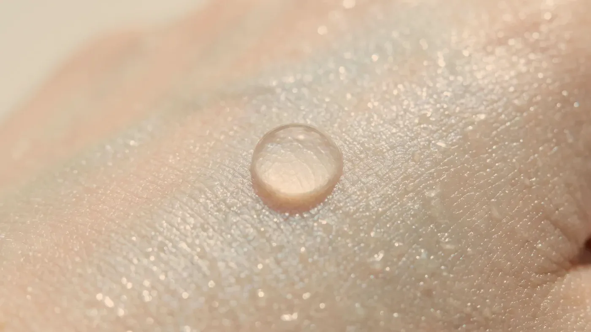
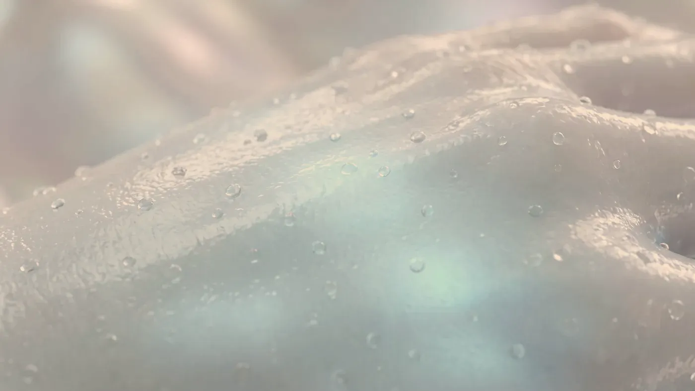

Şikâyet rehberi · Nem ve bariyer
Donuk cilt, ışığı dağıtan bir yüzeydir
Su kaybeden cildin yüzeyi düzgünlüğünü yitirir ve ışığı tek bir yöne değil her yöne saçar; ortaya mat, grimsi ve yorgun bir görüntü çıkar. Bunun ardında çoğunlukla derinin en dış katmanındaki koruyucu tabakanın zayıflaması vardır. Böyle bir ciltte ilk adım genellikle yeni bir şey eklemek değil, cildi yoran alışkanlıkları bırakmaktır.

Temsilî görsel · yapay zekâ ile üretildiAyrım
Cilt neden su kaybeder ve matlaşır?
Nem kaybı ve donukluk, hem kolayca gözden kaçan hem de sıklıkla yanlış yönetilen şikâyetlerdendir. Cildini canlandırmak isteyen kişi çoğu zaman rafına yeni ürünler ekler ya da daha iddialı işlemlere yönelir. Oysa pek çok durumda önce yapılması gereken, cildi yoran adımları plandan çıkarmaktır.
Bariyer ne işe yarar?
Bariyer, derinin en dışında suyun buharlaşıp gitmesini önleyen ince bir koruma katmanıdır. Üst üste dizilmiş yassı hücreler ve aralarını dolduran yağlar birlikte bir yalıtım gibi çalışır. Bu yapı suyu içeride tutar, tahriş edici maddelerin ve mikropların girişini sınırlar, derinin hafif asidik ortamını korur. Katman zayıfladığında daha önce sorunsuz kullandığınız ürünler bile batma ya da yanma hissi verebilir.
Su kaybı ile kuruluk aynı şey değil
Kuruluk, derinin az yağ üretmesiyle ilgilidir ve büyük ölçüde doğuştan gelen bir cilt tipidir. Su kaybı ise derinin suyu elinde tutamamasıdır ve çoğunlukla geçicidir. Yağlı bir cilt de su kaybedebilir: parlamayı gidermek için yapılan sert temizlik koruyucu katmanı zedeler, su kaybeden cilt daha çok yağ üretir ve sonunda hem parlayan hem gerilen bir cilt ortaya çıkar.
Matlığın kaynağı: pürüzlü yüzey
Düzgün bir yüzey ışığı toplu biçimde geri verir ve canlı görünür; pürüzlü bir yüzey ışığı saçar ve mat algılanır. Yenilenmenin yavaşlamasıyla biriken ölü hücreler, suyu azalan hücrelerin büzülmesi, dolaşımın ağırlaşması ve güneşin birikimli etkisi bu pürüzü oluşturur. Kuruluğa bağlı ince çizgilerin bir kısmı da su dengesi geri geldiğinde azalır.
Koruyucu katmanı zayıflatan etkenler
Çoğu zaman sebep bir hastalık değil, cilde iyi niyetle yapılan fazlalıklardır: cildi yağından tümüyle arındıran temizleyiciler ve çok sıcak su, aynı akşam üst üste sürülen aktif içerikler, birkaç günde bir değiştirilen ürünler, kalorifer ve klimayla kuruyan iç ortam, soğuk rüzgâr, uzun uçak yolculukları ve korunmasız güneş.
Direnen tablolarda tiroit bozuklukları, kansızlık, bazı ilaçlar ve düzensiz uyku gibi genel etkenler de ele alınır.
Zayıflamayı düşündüren işaretler
Yüzünüzü yıkadıktan sonra nemlendirici sürene kadar süren gerilme; önceden rahatça kullandığınız bir ürünün batması; nemlendiricinin etkisinin birkaç saatte kaybolması; sabah şiş ve mat, akşam gergin ve cansız bir cilt; sıcak, rüzgâr ya da sıcak duştan sonra beliren kızarıklık. Bunlardan birkaçı birlikte görülüyorsa yeni bir uygulama düşünmeden önce koruyucu katmanın durumuna bakılmalıdır.
Koruyucu katmanı zayıflamış bir ciltte ilk adım bir şey eklemek değil, bir şeyleri bırakmaktır. Önce kullandığınız bütün ürünler, sırası ve sıklığıyla birlikte konuşulur; cildi zorlayan adımlar çıkarılır ve cilde alışması için zaman tanınır. Pek çok ciltte bu dönemde, birkaç hafta içinde toparlanma eğilimi görülür; süre bozulmanın derecesine ve kişiye göre değişir.
Direnen durumlarda tiroit işlevleri, kansızlık ve kullandığınız ilaçlar hekim muayenesi sırasında ele alınır. Çabuk tahriş olan bir ciltte plan ağır ilerler ve her yeni adım ayrı ayrı eklenir. Koruyucu katman toparlanmadan başlatılan bir plan kalıcı olmaz; bazen en doğru karar daha az yapmaktır.
Yaygın kaşıntı, egzamaya benzeyen kızarık alanlar, haftalarca geçmeyen pullanma ya da belirli bir ürünü her kullandığınızda tekrarlayan tepkiler ayrı bir değerlendirme ister. Bu durumda estetik bir plan yürütülmez; önce nedenin ortaya konması gerekir.
Sonrası
Koruyucu katman toparlanınca hangi seçenekler konuşulur?
Cilt hazır olduğunda ve uygun görülürse aşağıdaki adımlar değerlendirilir. Bunlar genel bir çerçevedir; size özel plan muayeneden sonra hekim tarafından kurulur.
Gençlik aşısı (skinbooster)
NEMMuayenede belirlenir→Mezoterapi
NEMMuayenede belirlenir→İğnesiz mezoterapi
YÜZEYMuayenede belirlenir→Somon DNA ve polinükleotid
DOKUMuayenede belirlenir→
Gençlik aşısı (skinbooster)
Hacim eklemeden derinin su tutma kapasitesini ve esnekliğini desteklemeyi amaçlar; koruyucu katman onarıldıktan sonra konuşulur.
Sayfasına git →Sık gelen sorular
Merak ettiğiniz soruya dokunun, yanıtı burada açılsın
Bir adım ötesi
Cildinizi neyin yorduğunu birlikte bulalım
Muayenede kullandığınız ürünler baştan sona gözden geçirilir; bir şey eklemeden önce neyin bırakılacağı birlikte kararlaştırılır.
Metni hazırlayan ve tıbbi açıdan gözden geçiren: Uzm. Dr. Rahmi Cebeci (Aile Hekimliği Uzmanı · Medikal Estetik Sertifikalı).
Buradaki anlatım herkese yöneliktir; size özel bir teşhis ya da tedavi planı sunmaz, muayenenin yerini tutmaz. Her uygulamanın etkisi kişiye göre farklı olur.